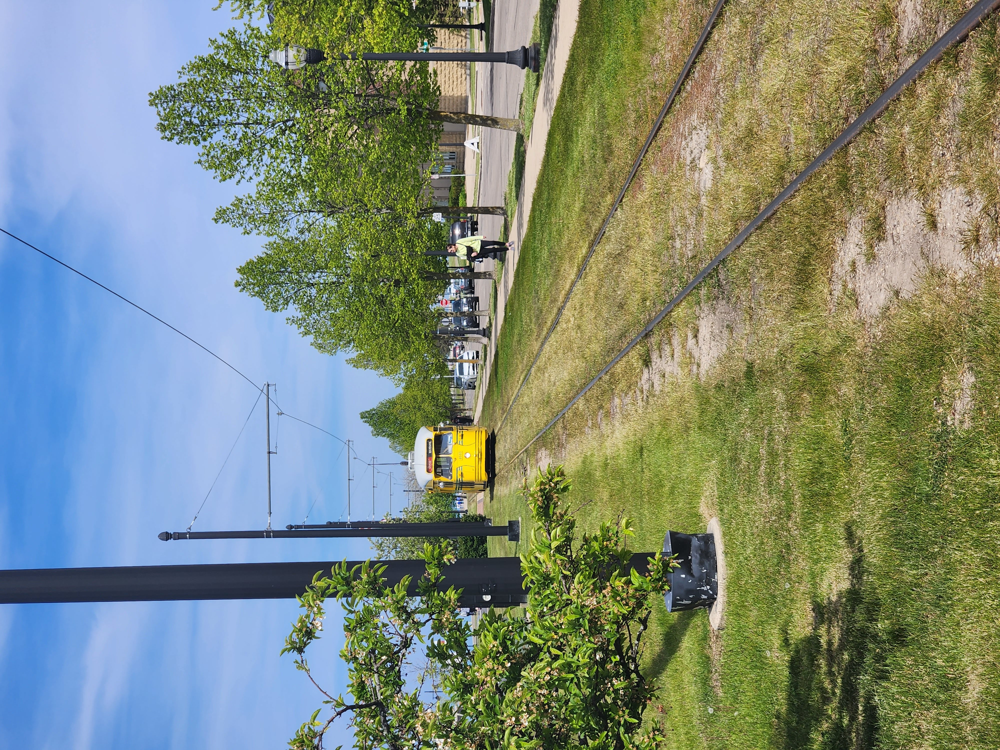
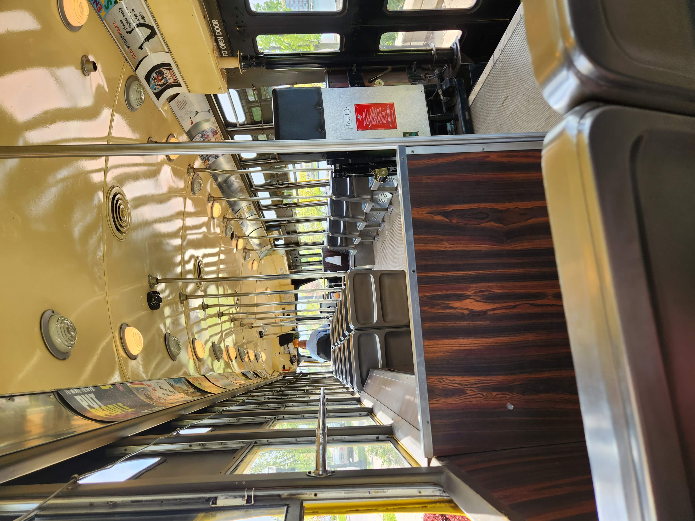
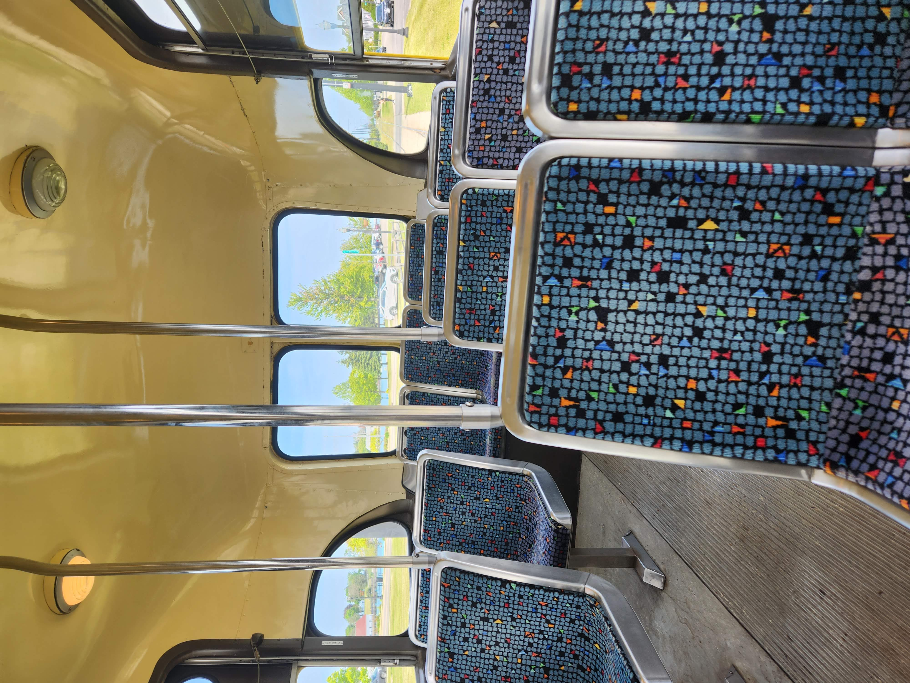
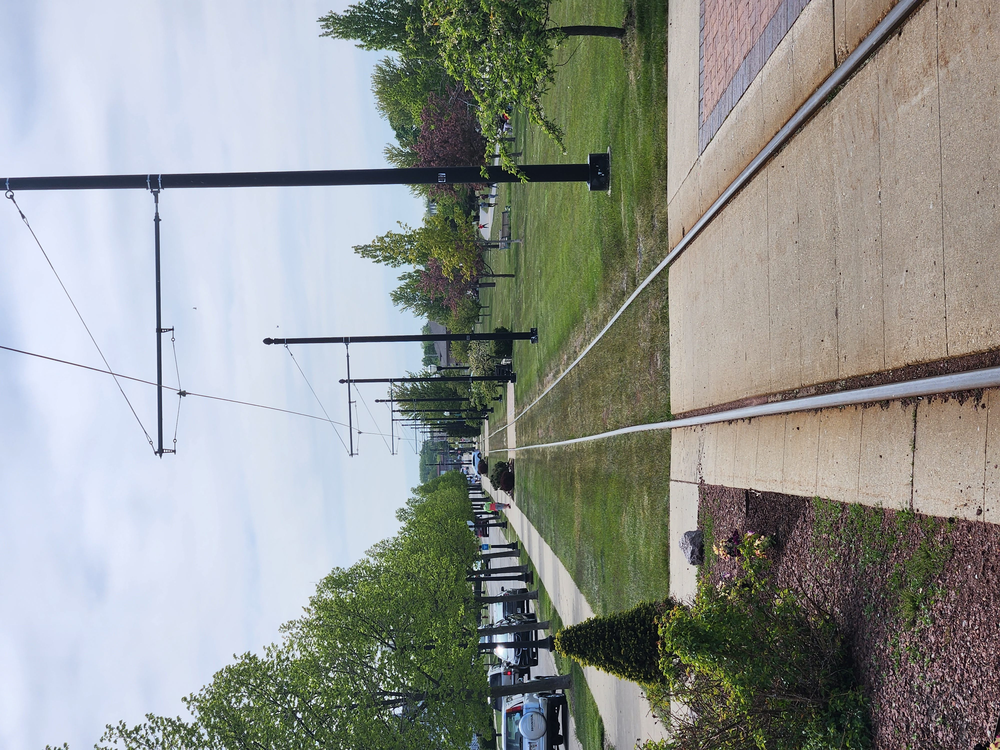
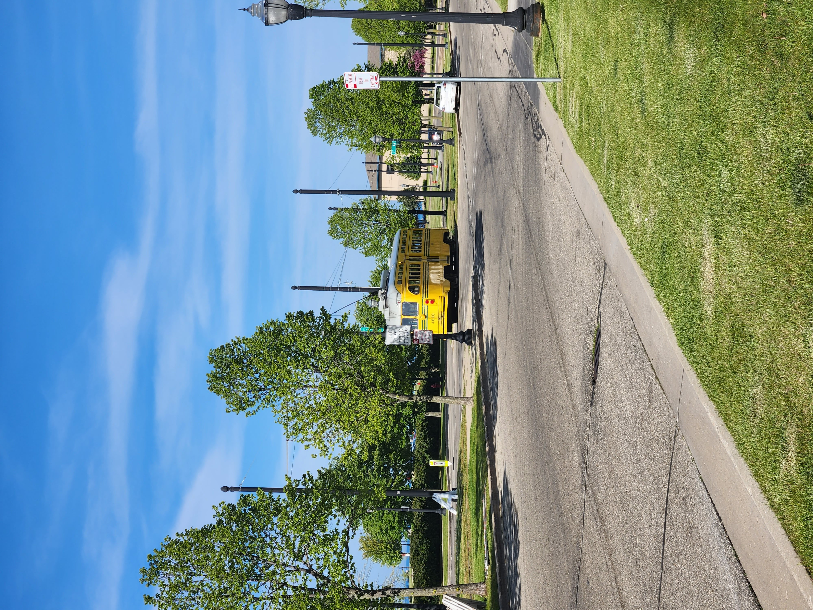
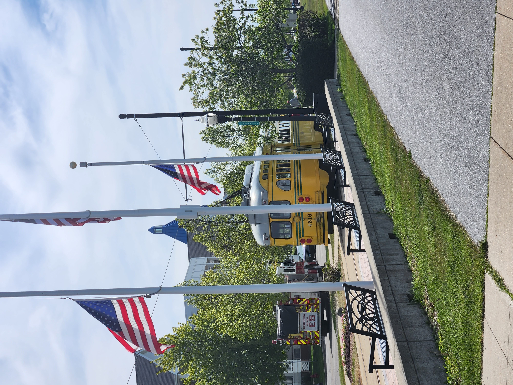
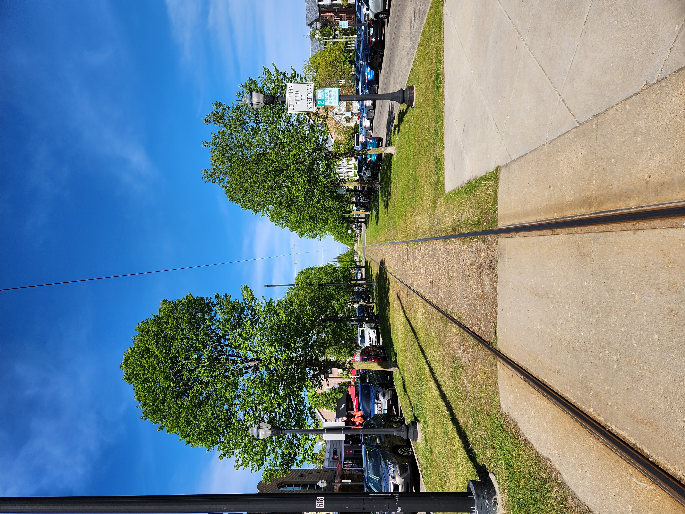
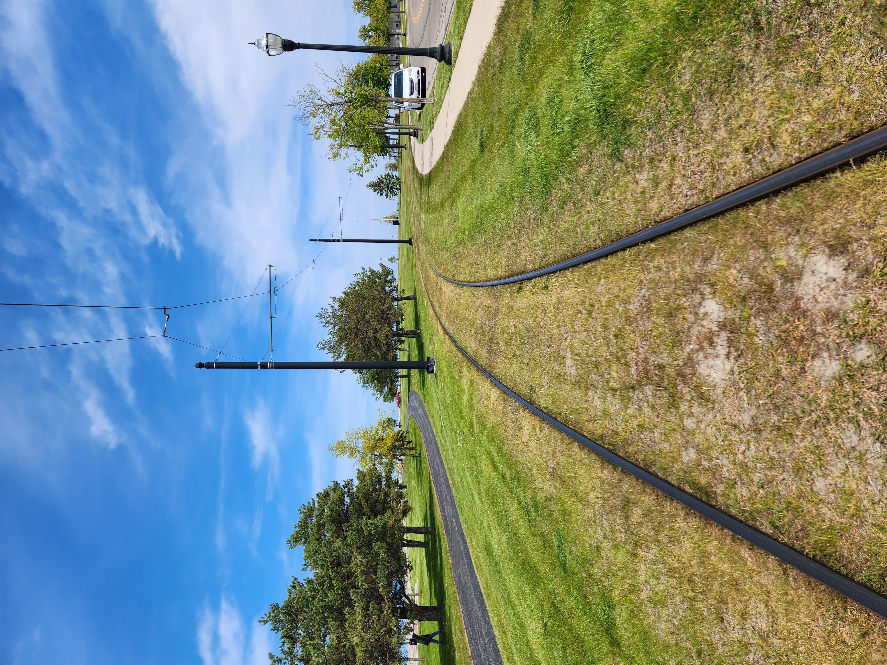

A while back, Caleb and Stormy traveled up to the city of Kenosha, Wisconsin, home of 100,000 people and is one of the few places still operating PCC streetcars. I was intrigued by the streetcar, and since riding a PCC was on my bucket list, I put it in the back of my head to ride some day. Winter passed and spring came, and I remembered that I wanted to ride this. Metra schedules do not work well to make this trip happen (that's another post), so I pushed it off for the nicer weather later in spring, and on a Saturday. May came around, I looked at the calendar. I was busy the 6th and 13th, so the 20th it was. The 20th came, and as I was eating lunch with a friend, he asked about my plans for the day. I looked at the calendar - Kenosha was the plan. I pushed it another week to the 27th, and I remembered that time.
After a 15 minute Metra delay, I arrived in Kenosha at 2:30 in the afternoon. Now Kenosha has it's own small bus system (which I have not ridden) and the streetcar operated by the same agency, Kenosha Area Transit. Land use around the Metra station is okay, but it improves closer to the lakefront.
The streetcar, which opened for service on June 17, 2000, operates on a 1.7 mile loop along 54th and 56th Streets downtown and by the lakefront. This is mostly within it's own right-of-way, except for the portion along 11th Ave by the Metra station. Fares are $1 per ride, and $3.50 for a day pass. It's just one PCC operating at a time along a 15-20 minute loop. They have a fleet of 8 PCC cars formerly used in Toronto and Philadelphia.

The streetcar approaches me. This streetcar was built in 1951, and operated in Toronto until 1996.


The interior of the PCC.
The stations are nothing too special. I got on at the stop at 54th St and 3rd Ave, which has two benches, two trash cans, and two light posts. The platform is concrete and brick, with a small sign reading "streetcar." No yellow lines to stand behind! None of the stops are named (therefore I will use the intersections they are located at), and some lack of the amenities at 54th / 3rd. No schedules are posted, but it comes by every 15-20 minutes, and during the summer and fall, between 10:30 am and 6:30 pm. Service ends earlier in the spring, and on weekends only during the winter. The stop spacing along the line is horrendous, with stops along 54th and 56th being less than 400 feet apart, but this doesn't matter too much, as the streetcar operates fully on a flag stop basis.

Standing at 54th / 3rd, the stops at 54th / 4th and 54th / 5th are easily visible.

The streetcar leaves the barren stop at 56th / 1st.
The streetcar does, however, play an important role in the Kenosha transit network. It connetcs directly to the Metra station (54th / 11th) and to the city bus hub (54th / 7th). My trip timed very well with the bus pulse, with it stopping before all the buses arrived, and leaving after all the buses left. This means that passengers can easily transfer from streetcar to bus and vice versa. This is also partially due to the fact that it is street-running on 54th west of 6th Ave, and holds to not block the buses.
I don't usually rate things, but 9/10. They've done very well to integrate tourism and actually useful transit options. The line does it's purpose as a connector to the lakefront, and is a tourist line for those interested in these streetcars. They should post a schedule and map at the stops though, as the only way to find this is to look through the city website.

The streetcar departs 54th / 2nd, the nicest stop on the system.

Looking east along the right of way along 56th at 56th / 6th.
I actually wrote this at a picnic table in Kenosha, and as I wrote this, the streetcar passed by 3 times.

Remember kids, don't walk on active electrified rail right of way!
Published: May 28, 2023 17:46